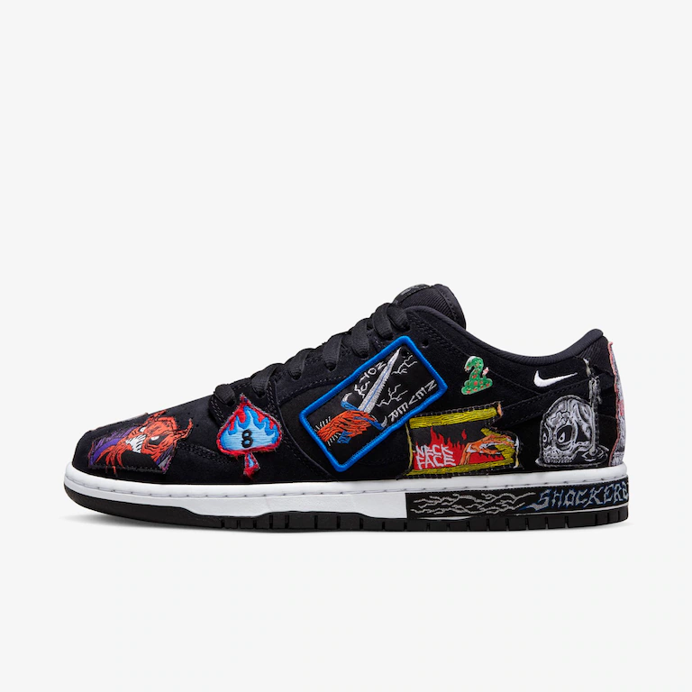
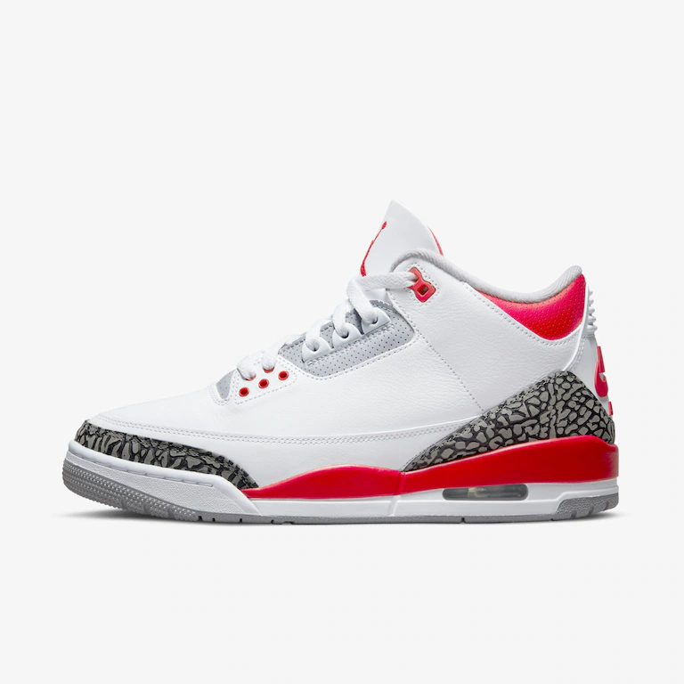

NIKE
Carrinho
Sobre nós
Femininos
Masculinos


Supreme Do Skate para o Mundo. Compre camisetas, moletons e acessórios da loja de skate mais famosa de NY. Batizada em homenagem à A Love Supreme, música de John Coltrane, a Supreme foi lançada em 1994 em Nova York por James Jebbia, um empresário que enxergou um nicho bem específico no mercado de skatewear, que parecia até então ter como público alvo apenas uma turma de garotos de 13 anos.O COMEÇO DA SUPREME A Supreme, uma das maiores marcas de streetwear do mundo, começou com o discretíssimo James Jebbia, fundador da grife. Filho de mãe britânica e pai americano, ele nasceu nos Estados Unidos mas se mudou para a Grã Bretanha com pouco mais de um ano. Aos 19, no entanto, bem no comecinho dos anos 1980, voltou para Nova York.O seu primeiro trabalho nos Estados Unidos foi na loja de roupas Parachute, localizada no SoHo. E o primeiro empreendimento de moda foi com a criação da butique Union NYC, em 1989, que vendia labels mais experimentais e esportivas inglesas. Mas foi entre 1991 e 1994 que ele começou a colaborar com um dos grande veteranos do streetwear, nome que impulsionaria a criação de seu próprio império. Tratava-se do californiano Shawn Stüssy, criador da grife homônima Stüssy, que nasceu na cultura do surfe, mas, em pouco tempo, foi adotada por skatistas e toda uma comunidade jovem urbana.E foi em 1994, dentro de uma pequena loja, na Lafayette Street, também no SoHo, que Jebbia deu início a essa marca independente, a Supreme. No início, a casa contava com a série tradicional de streetwear, como os sneakers, as camisetas, os moletons e os acessórios de skateboard – e logo se tornou um misto de clube underground, galeria de arte e ponto de encontro para skatistas e mentes criativas anti-establishment.